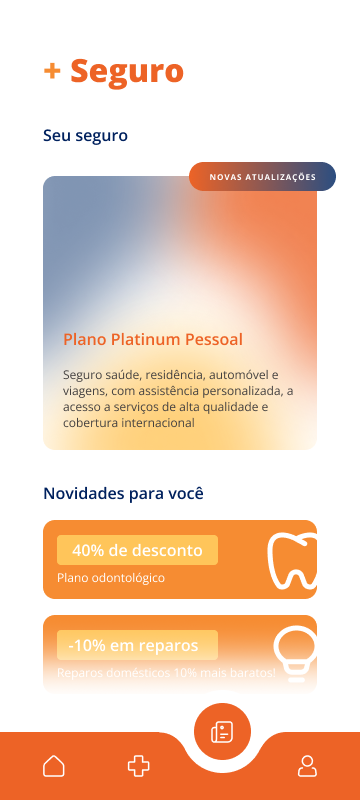
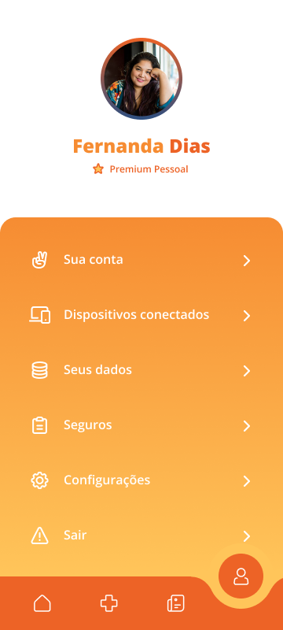
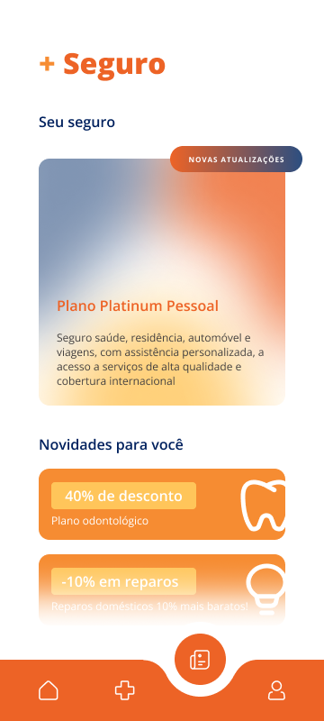
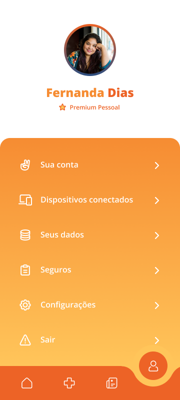
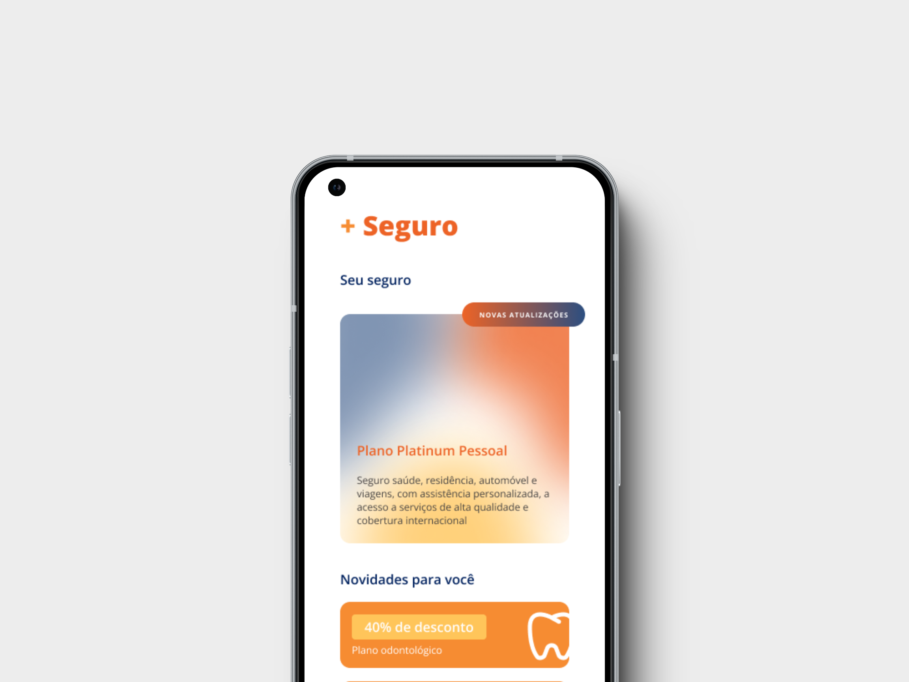
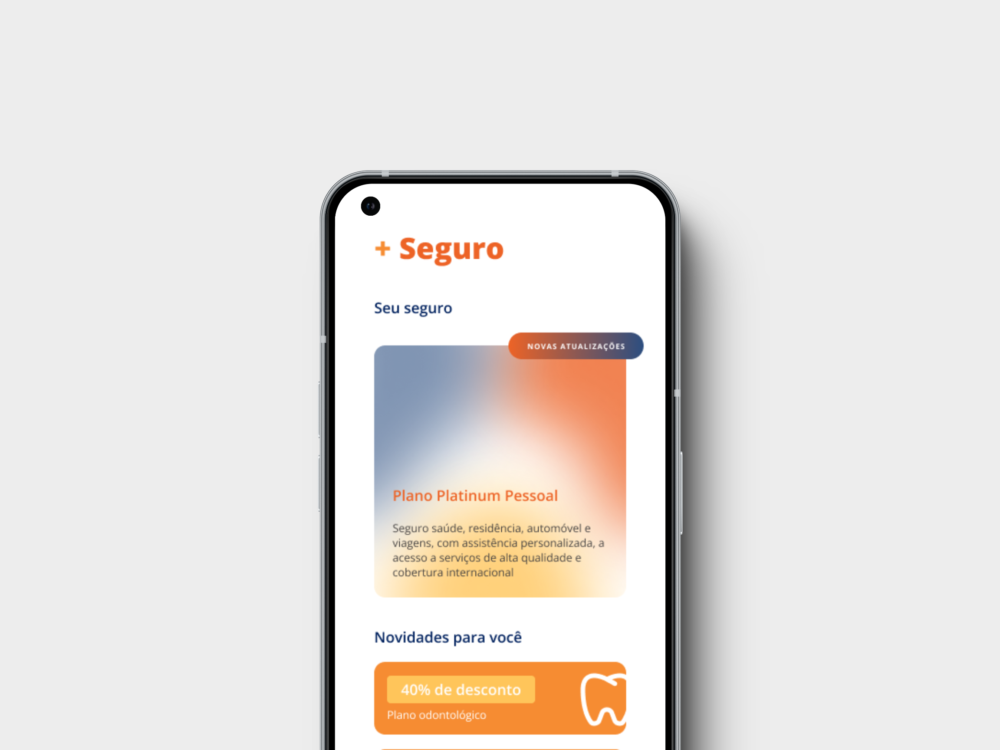

Vitalify
Vitalify surgiu durante um desafio de um processo seletivo, louco não? Este aplicativo
precisava inovar tudo que já existe na área de seguros ao mesmo tempo que gera valor ao cliente
e pensa em sua experiência completa.
Deste modo, porque não uma integração de dispositivos inteligentes para promoção da saúde e prevenção de sinistros?
E melhor, tudo em um só lugar...
 



A escolha de cores foi feita propositalmente com cores análogas, de modo a manter a identidade visual da empresa, mas trazer algo inovador para seu mercado. Duas coisas diferentes, mas que quando unidas torna tudo ainda mais especial.
E claro, como todo projeto precisa de um diferencial, com o Vitalify não foi diferente. Dessa vez busquei estudar sobre áreas de toque de um aplicativo de modo a facilitar sua utilização e proporcionar maior conforto ao usuário.
"É como ter um assistente de saúde no seu bolso, sempre pronto para ajudar você a viver melhor e mais seguro"


 
